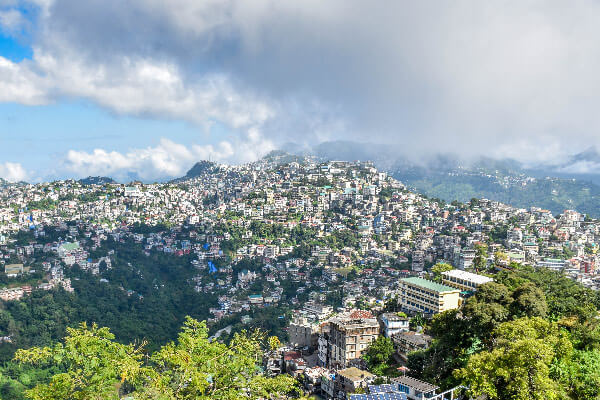
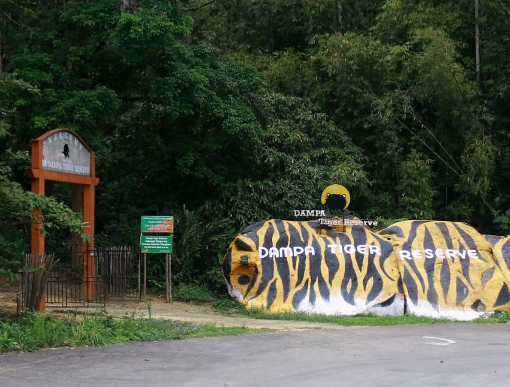

Welcome to Mizoram
Mizoram – The Land of Rolling Hills, Mystical Caves, and Breathtaking Waterfalls! 🌿🏞️
🌟 Mizoram’s Iconic Places 🐅✨

Aizawl 🏡 The capital city of Mizoram, known for its scenic beauty and vibrant markets.
Home to attractions like Solomon’s Temple, Mizoram State Museum, and Durtlang Hills.
Offers a mix of modern lifestyle and rich tribal heritage.
Falkawn Village 🏡 A model Mizo village near Aizawl, showcasing traditional Mizo culture.
Visitors can explore traditional huts, artifacts, and local lifestyle.

⛰️ Majestic Mountains & Mesmerizing Waterfalls
Phawngpui Peak (Blue Mountain) 🏔️ The highest peak in Mizoram (2,157 meters).
Offers breathtaking views of the hills and Myanmar border.
Home to rare orchids, rhododendrons, and wildlife like clouded leopards.
Vantawng Falls 🌊 The highest waterfall in Mizoram, about 750 feet tall.
Surrounded by dense bamboo forests, making it a scenic spot.
Best viewed from a nearby viewpoint as the terrain is difficult to access.


Reiek Tlang 🏕️ A popular trekking destination near Aizawl.
Offers panoramic views of the surrounding valleys and hills.
Features a heritage village showcasing Mizo culture and traditions.
Tam Dil Lake 🌊 A beautiful artificial lake near Saitual, perfect for boating and picnics.
Surrounded by lush greenery, it is a peaceful retreat.
"Tam Dil" means "Lake of Mustard" in the Mizo language.

Lamsial Puk Cave 🏚️ A mysterious cave with historical significance, linked to tribal wars.
Offers a thrilling experience for adventure seekers.
🕉️ Religious & Spiritual Places

Solomon’s Temple ⛪ A grand white-marble church in Aizawl, known for its stunning architecture.
Built by the religious sect "Kohhran Thianghlim" and open to visitors.
🌿 Wildlife & Nature Destinations

Dampa Tiger Reserve 🐅
The largest wildlife sanctuary in Mizoram, located in Mamit district.
Home to tigers, leopards, elephants, and a variety of bird species.
A great place for wildlife enthusiasts and nature lovers.
Thenzawl Deer Park 🦌
A wildlife conservation area where visitors can spot deer species.
Surrounded by scenic hills, making it a great picnic spot.